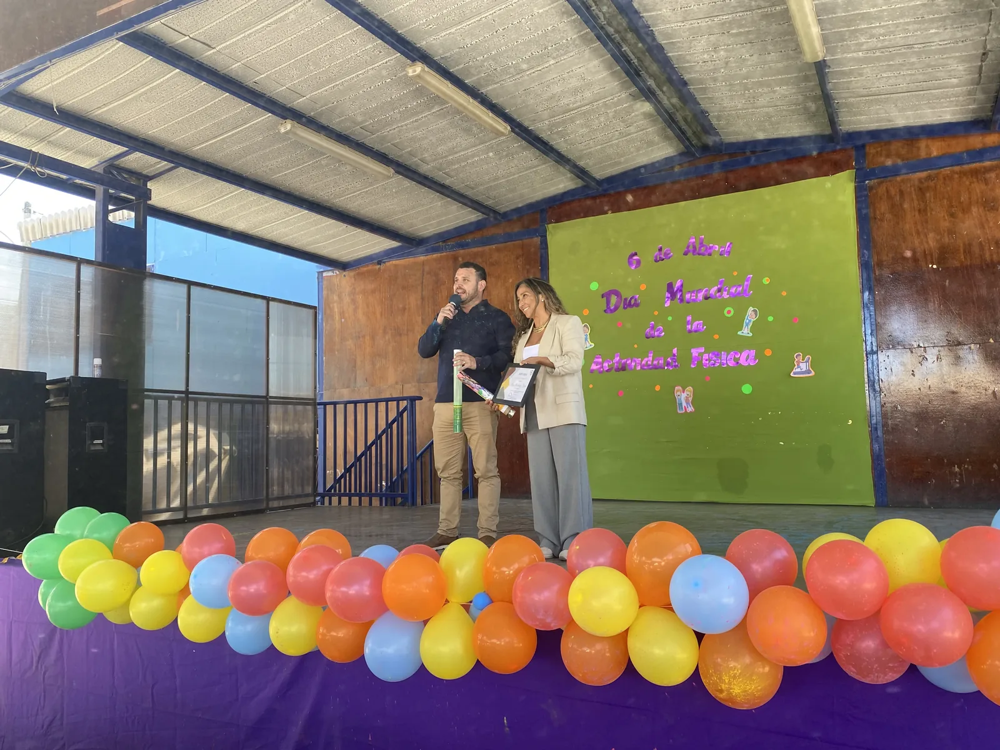

Noticias recientes

Vida escolar
Escuela Las Canteras conmemora el Día Nacional del Deporte
Una jornada de actividades recreativas para promover el movimiento, la vida saludable y el trabajo en equipo.
Participación
Nueva directiva del Centro de Estudiantes 2026–2027
La participación democrática y el liderazgo estudiantil continúan fortaleciendo la vida escolar.

Medio ambiente
Escuela Las Canteras celebra el Día Mundial del Agua
La comunidad educativa refuerza la importancia del cuidado del agua y la sustentabilidad.
Mi Escuela
Información institucional, reglamentos y sello educativo.
Biblioteca CRA
Recursos digitales y apoyo a la lectura.
Tecnología
Intranet de la sala de computación, disponibilidad y recursos de apoyo.